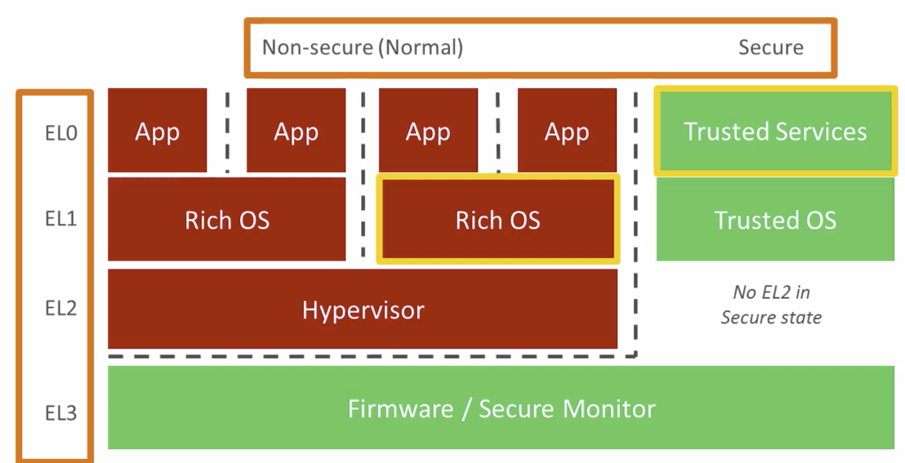
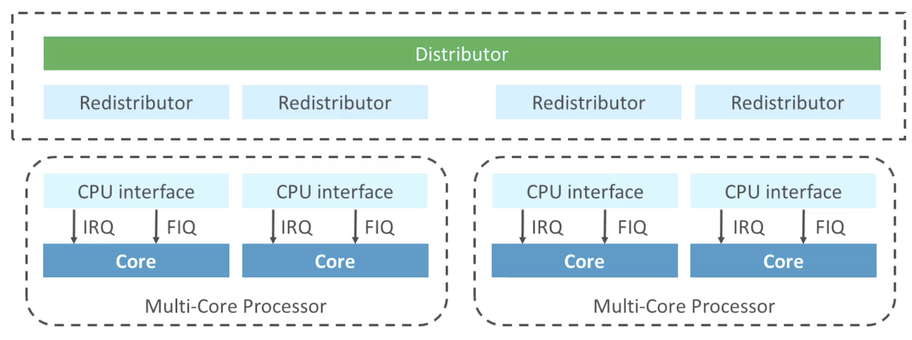
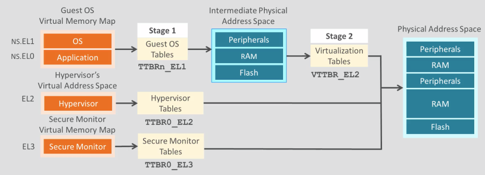
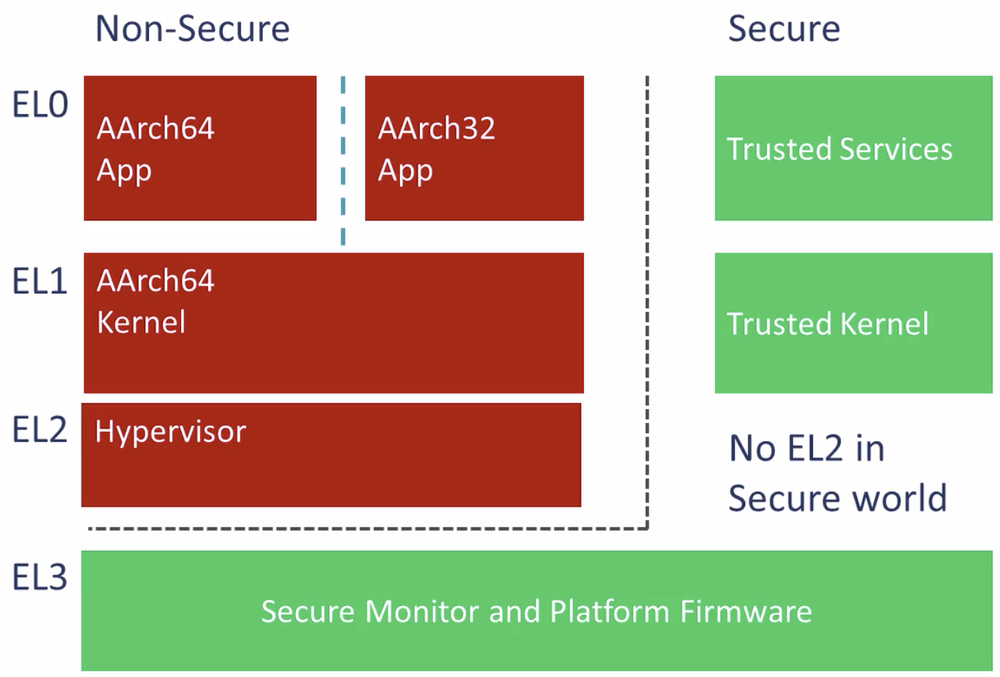

ARMv8 Architecture
ARM online training note
1. Introduction
What is an architecture?
- Instruction set
- Exception model
- Memory model
- Debug
ARMv8
- AArch32 vs AArch64
- AArch32: backward compatible to ARMv7
- AArch64: fixed 32-bit instruction, new exception model, 64-bit virtual address
Priviledge and security model

- 4-level of privilege
- EL0 < EL1 < EL2 < EL3, larger the higher privilege
- 2 security modes
Mixture of AArch32 and AArch64
- Only 64-bit OS can host a mix of 32-bit and 64-bit apps
- 32-bit app can only be on lower EL level
2. ISA
Register
- X0 to X30: 31 general purpose registers
- W0 to W30 are their 32-bit form
- Zero register: XZR and WZR
- V0 to V31: floating point, SIMD, crypto operations
- Multiple view: B(8), H(16), S(32), D(64), Q(128)
- System registers
- MSR / MRS: move from/to system register to/from generator purpose register
Data processing
Flow control
- ARM also have implicitly flag registers that are results of comparisons
PCS (proceduare call standard)
- Parameter pass in: X0 - X7
- Return value: X0 - X1
- Must preserve: X19 - X29
- Can corrupt: X0 - X18
- Return address (LR): X30
Load and store
LDR / STR W0, [X1, #12](X1 is not changed)- Pre-index:
[X1, #12]!(X1 is changed then used) - Post-index:
[X1], #12(X1 is used, then changed)
- Pre-index:
Floating point
SIMD
- Lane = whole Vx register & element
- Neon
Vectors
Vn.xy- n = register number
- x = number of elements
- y = size of the elements (B/H/S/D/Q)
- Total vector length = 128-bit / 64-bit for instructions to work on a whole vector
- Special instructions work on individual elements
3. Exception
- Synchronous = exception
- Asynchronous = interrupt
Exception level (EL)
PSTATE <=> SPSR
PSTATE is the current state of the processor, and SPSR is the registers to save the PSTATE.
Mapping AArch64 from/to AArch32 registers when moving from AArch32 to AArch64.
Vector table
It contains instructions instead of addresses, typically for branching to higher level exception handling code. And each exception level has its own vector table and stack pointer.
Stack pointer
Software can choose either current exception level stack pointer or SP_EL0. It’s too avoid stack overflow.
Normal OS goes into SP_EL0, and exception handling goes into SP_EL1
Handling exception
Sync
- ESR (exception syndrome register)
- FAR (fault address register)
- ELR (exception link register)
Async
- IRQ = non-secure interrupts
- FIQ = secure interrupts
- SErrors = system errors
Sequence of handling exception
- Save PSTATE to SPSR, write PC to ELR
- Jump to vector table
- Jump to exception handler
- Execute exception handler
- ERET (exception return)
- SPSR to PSTATE, jump to ELR
Routing
- Exceptions routed to higher EL cannot be masked
- Exceptions routed to lower EL are always masked
- You can never loose priviledge by taking an exception
GIC

3. Memory Model
Overview
- Access permission
- Read/write permissions
- Executable/non-executable
- Priviledge/unpriviledge
- Memory types
- Cachable/uncachable
- Normally peripheral address is uncachable
- Normal/device or faulting
- Cachable/uncachable
Memory management
Page table entry
- From virtual to physical address translation, as well as attributes for that address
- Some bits are for OS, such as dirty and accessed (PTE_YOUNG / PTE_OLD in Linux)
Memory types = normal
- Optimization to normal memory: DRAM/SRAM/Flash/ROM/…
- Reordering
- Merging
- Speculation
- Unaligned
- either cacheable or non-cacheable are OK
Memory type = device
- Side effects
- Cannot do speculative access
- Cannot be executable
- Attributes
- Gathering?
- Re-ordering?
- Early ack?
- Device type: stronger to weaker
- GRE -> nGRE -> nGnRE -> nGnRnE
- Can upgrade to a weaker type
MMU (memory management unit)
- Software defines the translation, MMU in charge of reading that table and provide the translation service to the core
- TLB (translation look-aside buffer) + PTW (page table walker)
- TLB of most modern ARM cores also caches intermediate steps of translation to speed up the process
- MMU is before the cache, so cache works with physical address and won’t be affected by changes in address translation
Virtual address space
AArch64 uses 48-bit virtual address, and there are 2 of them. One for kernel (not avaible in EL2 and EL3), one for application. So there are 2 sets of translation tables, which are both in memory. TTBR is pointing to the translation table base.
Translation table (page table)
- 3-level of tables
- 3 different sizes of page
- 4KB, 16KB or 64KB
Translation regimes
- EL3 secure monitor table
- EL2 hypervisor table
- EL1/EL0 goes through 2 stages of translation tables for virtualization

Secure physical address spaces
- Secure vs non-secure
- Non-secure program in EL1/EL0 can only access non-secure physical address
- Secure EL1/EL0 programs can access both
4. TrustZone
Overview
Securityt is defending asserts from attacks. And it’s impossible to avoid all kinds of attacks, just need to make sure the cost of attack is higher than the value of the assets.
Trade-off is design complexity, power consumption, and even user experiences.
- confidentiality
- integrity (authentication)
- availability
Priciple of least privilege
Only the information and resource to its legitimate purpose.
Separate trusted and untrusted softwares, and give them different privileges.
Requirements of levels of trust
- Trusted execution state
- Code, data, IO
- One possible solution: separated security processor which has its own memory
- TrustZone: use the same processor, but has 2 different modes
- Separate the trusted software’s execution state with that of untrusted software
- Memory is dynamically partitioned for security
TrustZone memory space
- Separate trust zone and nontrust zone in memory
- Need the memory controller to enforce the access permission for every access requests
- AXI, ACE and CHI all support TrustZone memory access
- Even with wrongly programmed MMU page tables, it still can protect the memory space
- Caches have its own security state field of each cache line, which is physical address indexed
- Need the memory controller to enforce the access permission for every access requests
- Configure the memory space (including DRAM and IO)
- Static config at synthesis time
- Dynamic config using security processor
- Usually using a mix of both above
- Static for security processor’s memory region
- Dynamic for IOs that let user application communicate with outside world
TrustZone and exception level

- Every exception level has its own virtual address space
- There are 6 different types of virtual address space in total
- MMU translate them into trust or non-trust physical memory zones
TEE (trust execution environment)
- TEE
- Separated memory space for trusted OS, software and drivers, which runs at trusted EL1 and EL0.
- Trap to EL3 to swap execution state between non-secure and TEE
Chain of Trust
- Authentication with digital signature on every piece of software loaded in before execution
- Begins at BL0 in ROM